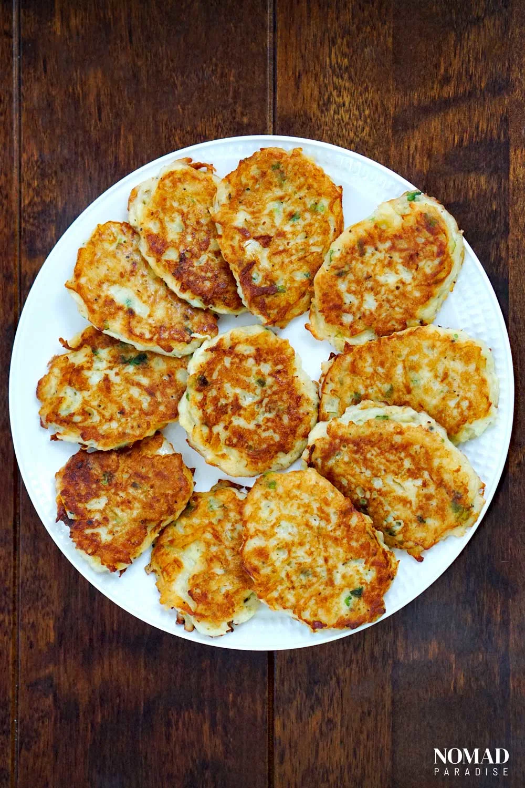

Eastern Europe is renowned for its filling, comforting dishes, and draniki is no different. You've got crispiness and softness, warmth and crunch, starchy potato and tangy onion, all in the same mouthful.
This Eastern European staple is incredibly diverse and can be served and enjoyed in so many ways. It's stomach-filling, heartwarming food at its purest!
Put simply, deruny (draniki) is a dish of wholesome potato pancakes. Potato pancakes are found in many different European cuisines, in various forms. Be it bulviniai blynai in Lithuanian cuisine in the north, to German cuisine's kartoffelpuffer in Central Europe, all the way down to Ukrainian cuisine's deruny in Eastern Europe, potato pancakes are hugely influential across the continent.
Ukranians traditionally serve sizeable portions of deruny in a large crockery dish, with plenty of sour cream on the side. But however you enjoy our deruny recipe, one thing is for sure: they are very simple to make!
To make draniki, you'll first need to assemble the following ingredients:
Once the potato pancakes are ready, remove them from the pan and place them on a plate or in a bowl to rest. As mentioned above, if you want to want to do as the Ukranians do, use a crockery dish.
Sour cream and draniki are a match made in heaven. Ukranians also enjoy this wholesome dish with a side of meat.
The beauty, however, of draniki is that one pancake alone is packed with goodness and flavor, and is very filling
all by itself.
However, as this is a potato dish, if you want to get creative your serving options are endless.